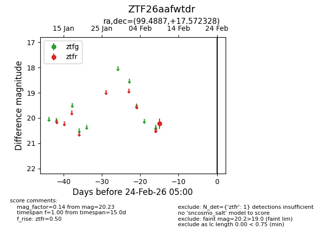
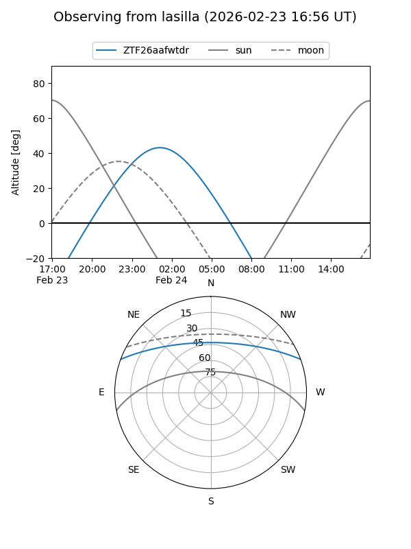
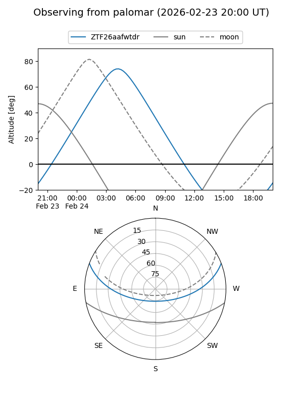

ZTF26aafwtdr
Target ZTF26aafwtdr at 2026-02-24 09:08
Aliases and brokers:
FINK: link
Lasair: link
ALeRCE: link
alt names
ZTF26aafwtdr (ztf,fink_ztf)
Coordinates:
equatorial (ra, dec) = 99.4887,+17.57233
equatorial (HMS+DMS) = 06:37:57.28,+17:34:20.38
galactic (l, b) = (195.7507,+5.03581)
Flags:
Photometry:
last ztfr=20.23
1 ztfr detections
Lightcurve

Visibility


Additional plots